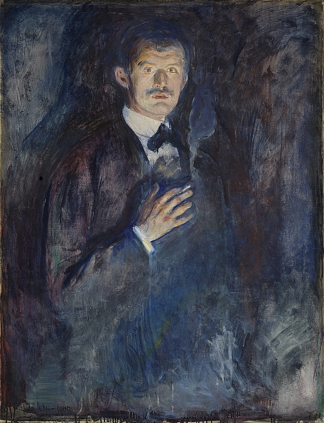
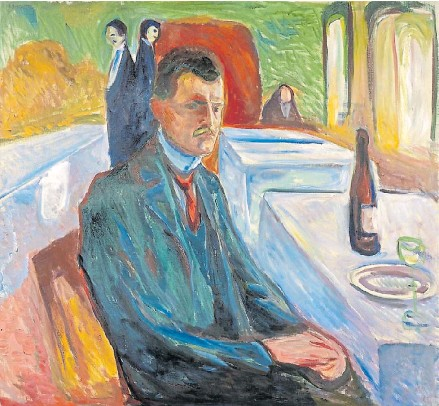
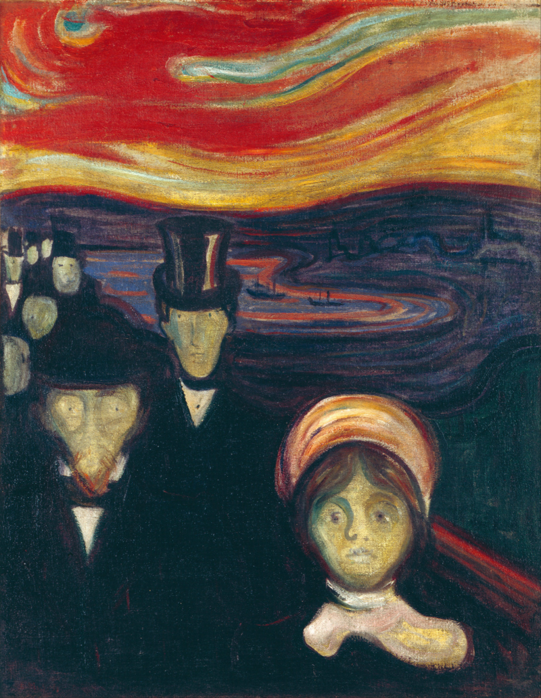
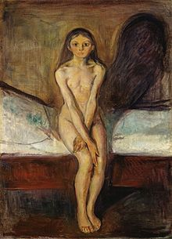
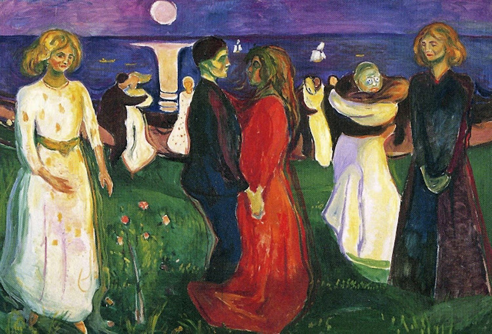
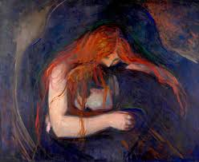

Munch Edvard
Edvard Munch, considerado precursor de la tendencia expresionista, nació en Loten (Noruega) en 1863. Pasó la mayor parte de su infancia y adolescencia en Cristiania (la capital de Noruega, que a partir de 1924 se llamará Oslo). Cuando aún no había cumplido los cinco años, su madre murió a causa de tuberculosis. Nueve años más tarde, su hermana Sophie, dos años mayor que él, fallece de la misma enfermedad.  Estos hechos ejercerán una influencia decisiva en su actividad artística. Sus tristes y angustiosas representaciones basadas en sus obsesiones y frustraciones personales abrieron el camino al desarrollo del expresionismo. Después de un año en la Escuela Técnica de Arquitectura, en 1880 decide dedicarse a la pintura, se inscribe en la Escuela de Dibujo de Cristiania y pasará algunos veranos pintando en la academia de pintura al aire libre del paisajista Frits Thaulow, asimilando un realismo de inspiración francesa. En 1885 realiza un corto viaje a París y conoce de cerca algunas obras de los impresionistas Monet, Renoir, Degas, Pisarro y Seurat. Sus pinceladas serán cada vez más audaces, menos atadas a las convenciones del realismo. Lo más importante de este periodo es la obra La niña enferma, en la que evoca su experiencia personal con la muerte de su hermana y donde ya aparece la desolada visión de la existencia que caracteriza la mayor parte de su producción. En 1889, Munch viaja a París de nuevo con una beca del gobierno noruego y durante un breve periodo de tiempo es alumno del pintor academicista Leon Bonat. Tras realizar obras de carácter impresionista recibe el influjo del postimpresionismo, concretamente de la obra de Gaugain y Van Gogh, que lo llevan a dar un giro radical a su trabajo. Poco después de su llegada a París recibe la noticia de la muerte de su padre. En Noche, de 1890, representa la soledad y la melancolía. El interior oscuro, con la figura solitaria junto a la ventana, queda dominado totalmente por los tonos azules. Hasta 1908 vive la mayor parte del tiempo en Alemania, sobre todo en Berlín, aunque hace frecuentes viajes a Noruega y a París. Son años cruciales en su pintura, crea un estilo sumamente personal basado en acentuar la fuerza expresiva de la línea, reduciendo las formas a su expresión más esquemática y a hacer un uso simbólico, no naturalista del color. Pinta El grito, Vampiro, La voz, la primera versión de Madonna, comienza un ciclo que el artista llamaría más tarde El Friso de la vida. Todas ellas expresan sus experiencias personales sobre el amor, la enfermedad, la muerte y la propia naturaleza. A Munch le interesa lo que se puede captar por el espíritu y no a través de la vista.  El grito refleja sus propios temores y tormentos. Su fuerza expresiva se debe en gran medida a las técnicas y efectos pictóricos empleados, la estridencia del colorido y la sinuosidad de las líneas. Se expresa la soledad del ser humano y su pesimismo frente las adversidades. El grito de terror trae consigo la tensión y el pánico interior que destruyen la anatomía. Los rasgos de rostro desaparecen bajo el gesto. No hay nada de realismo, se representa el interior y no el exterior. La figura del primer plano aprieta las manos contra la cara como signo de angustia y desesperación, mientras que en segundo plano aparecen otras personas frías y distantes como queriendo significar que el prójimo no nos ayuda en los momentos de desconsuelo. El paisaje participa en ese malestar. El cielo encendido y los torbellinos parecen envolver amenazadoramente a la persona que grita. Las líneas curvadas y sinuosas enlazan con el Modernismo, tan de moda en la época. Los colores cálidos y fríos no están compensados, su efecto es agresivo, ofreciendo una imagen angustiada de la realidad y del mundo interior. El reflejo de sus ansiedades sexuales puede verse en múltiples retratos de mujeres, representadas alternativamente, como frágiles e inocentes víctimas o como vampiresas devoradoras de la vida. Vampiro. De la atmósfera incierta surge una mujer misteriosa, perversa, de cabello largo que se identifica con la potencia sexual. Madonna. Supone un vuelco con respecto al modo tradicional de representar la maternidad. Es un espectacular y sensual desnudo femenino rodeado de una atmósfera poco tranquilizadora. La figura emerge de un fondo tenebroso, de líneas distorsionadas. El cuerpo nos atrae, pero hay algo que nos angustia, la gran tensión psíquica, los ojos son casi cuencas cadavéricas que simbolizan la muerte. Es una visión demoledora de la maternidad. El Puente. Presenta a de tres muchachas asomadas a un puente sobre un riachuelo. Las líneas sinuosas recrean un ambiente de cierta angustia, las chicas no hablan, no se comunican, solamente observan en silencio, reflexionan sobre el sentido de la existencia, sobre las contradicciones de la vida, o sobre la soledad. Muerte en la alcoba muestra una escena en tonos chillones y descoloridos. El motivo se basa en el recuerdo de la muerte de su hermana Sophie y toda la familia de Munich está representada. El foco dramático del cuadro se centra en la figura que simboliza al propio Munch.
Algunas De Sus Pinturas
Ansiedad

El Grito

Pubertad

La Danza De La Vida

Amor Y Dolor
